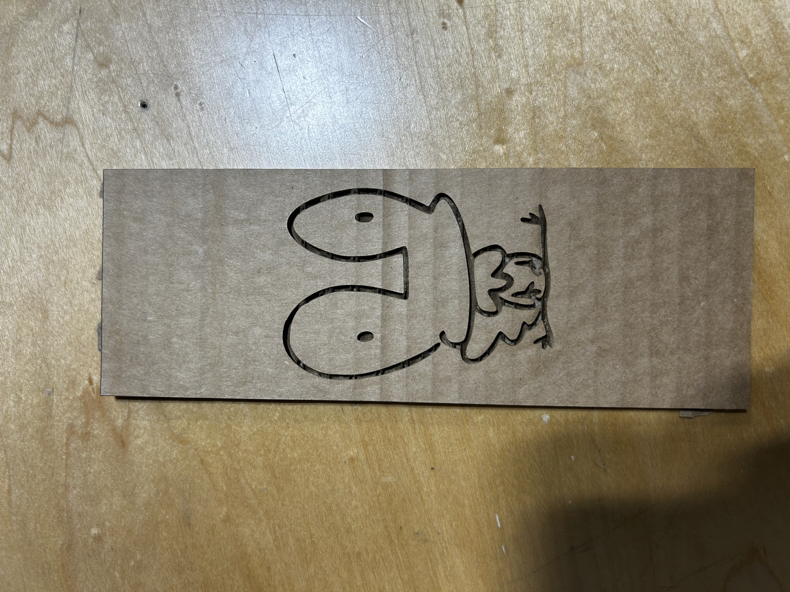
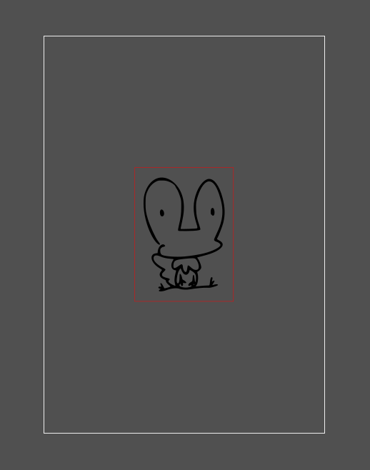
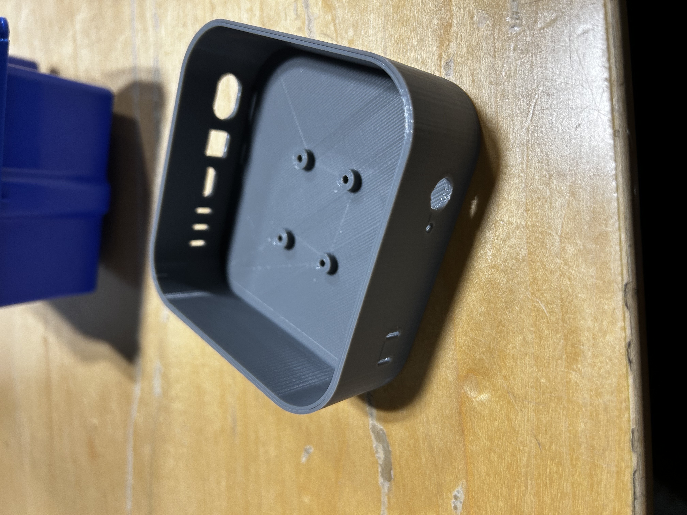
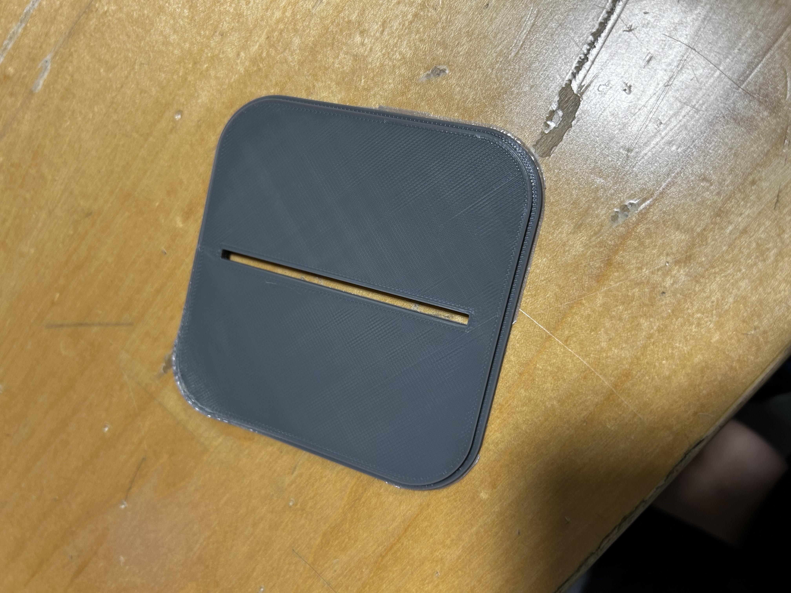
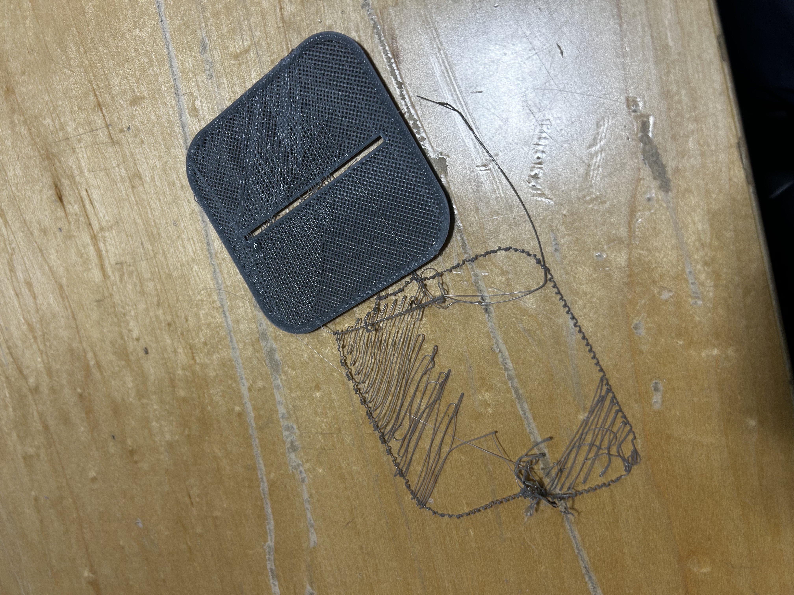
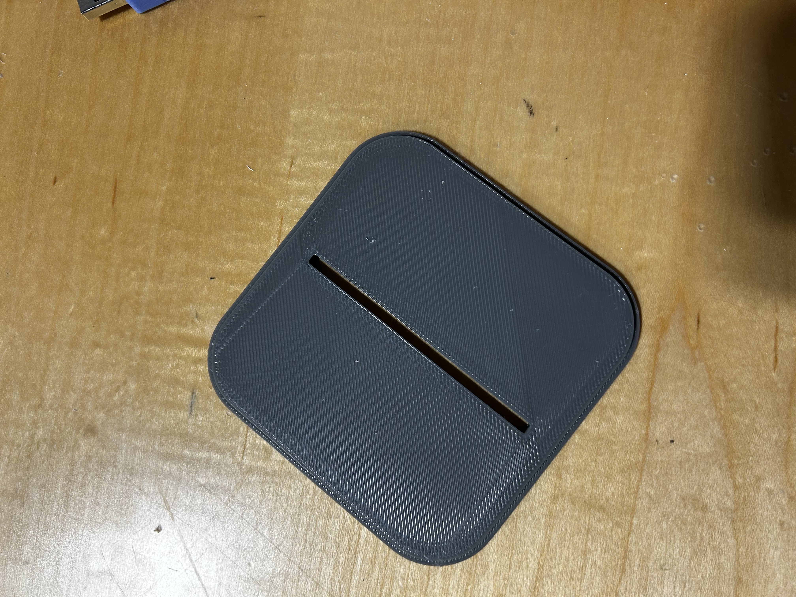
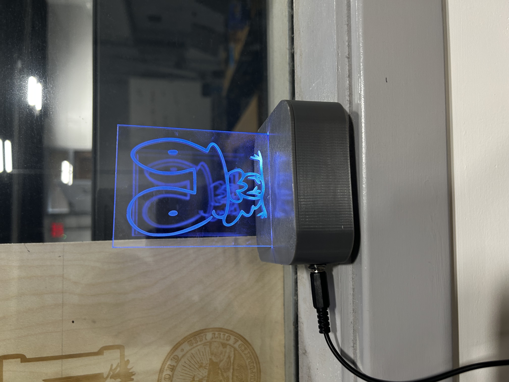

soph week 2/3 - 2/7
i broke another computer. that makes it the fourth thing i’ve broken this year as a sophomore… at least i managed to complete my lightbox this week.
most of my time was spent 3d printing the enclosure and laser cutting the acrylic piece.
acrylic piece
while the box parts were printing, i continued working on the acrylic design and did a test cut on cardboard to check the fit.
the initial piece was slightly longer than i wanted, so i scaled it down to make it more compact. the adjusted size looked much better.
main component
website before the weekend, i started the 3d print for the main housing of my box and when we returned, it turned out amazing, unlike a few other components.
lid
ermmm....
my first attempt at printing the lid was on the neptune, but it ended up warping. after discussing with others, i learned that many people faced similar issues with warping on that printer. to fix this, i decided to reprint it on the fusion3.
the second try turned into spaghetti, likely because i didn’t use enough glue. this forced me to print the lid a third time…
finally, after applying too much glue, the lid printed perfectly without any warping or other issues. with this done, only one piece remained before i could assemble the box.
finished product
with all three prints completed and the acrylic piece finished (cut on the small laser cutter since the larger one was broken), my lightbox is finally done. the temperature sensor isn’t very practical since it’s enclosed, limiting airflow and temperature changes, but it still functions somewhat. the lid fit wasn’t perfect—it required a bit of force to secure—but it eventually worked, and everything came together nicely. moving forward, i have a few vague ideas for projects that i may tackle before we start the sumobot.